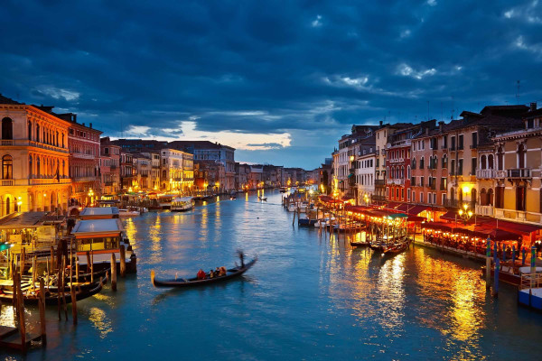
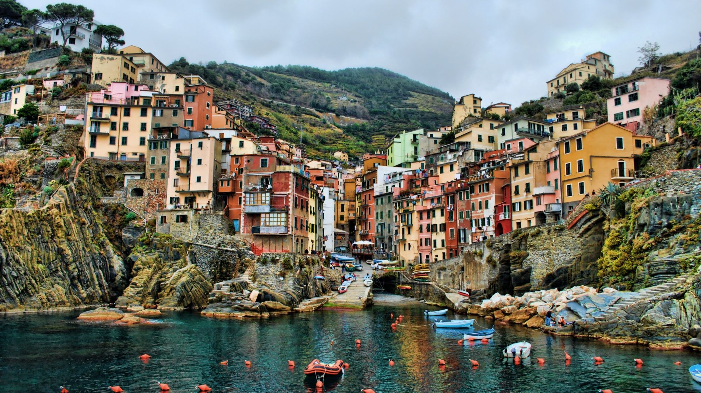
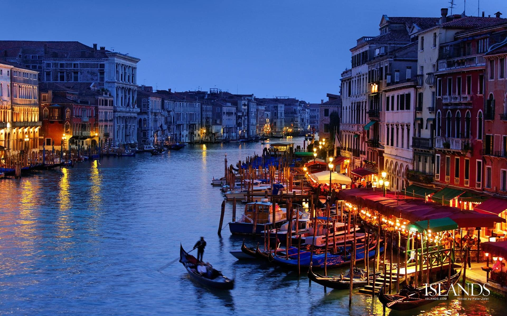
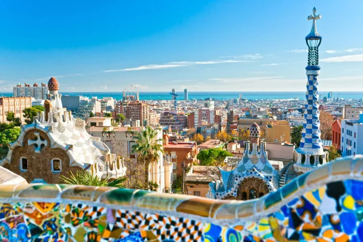
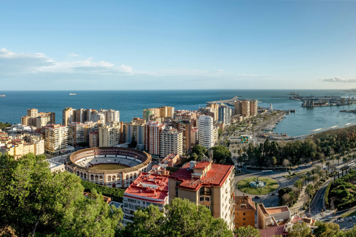
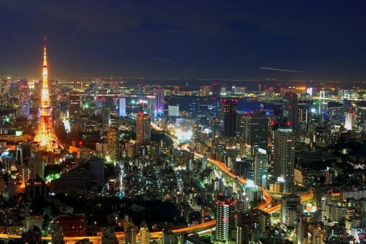
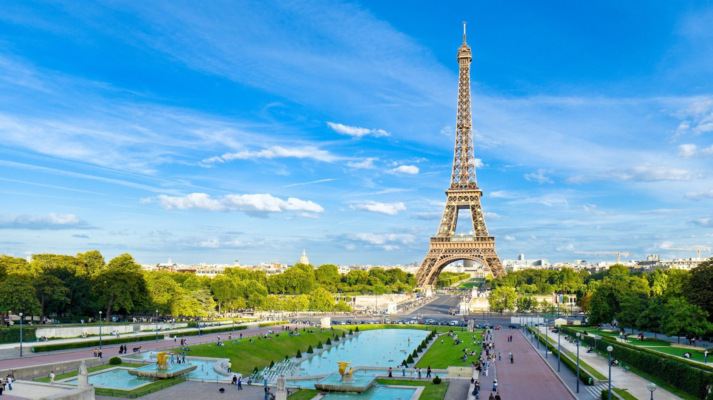
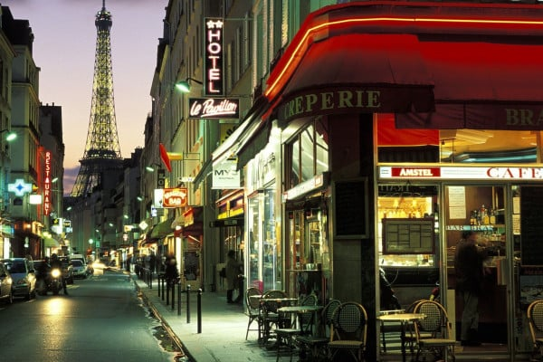
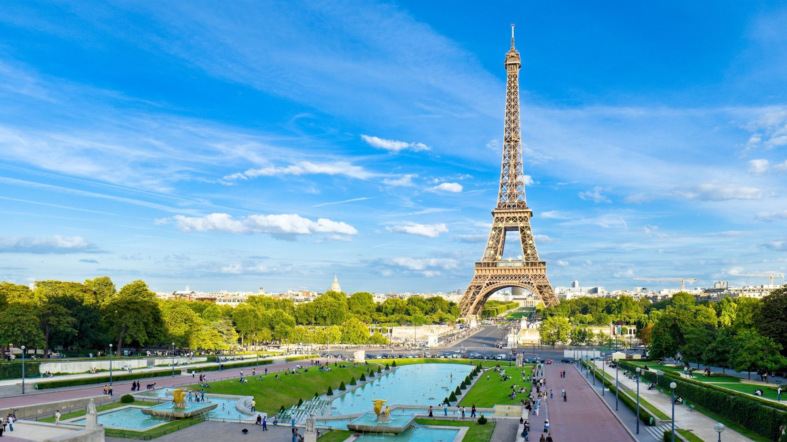
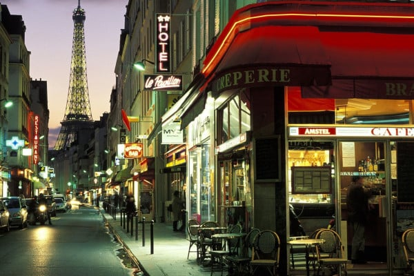

Paris is the capital city of France, located in the north-central part of the country.
It is often referred to as the "City of Light" or the "City of Love," and is known for its romantic atmosphere.
city's most famous landmarks include the Eiffel Tower.
Italy



Intro :
Italy is a country located in southern Europe, bordering France to the west.
Switzerland and Austria to the north, and Slovenia to the east. It is known for its rich cultural heritage
beautiful cities, and stunning natural landscapes.
Spain


Intro :
Spain is a country located in southwestern Europe.
Portugal to the west, and Andorra and Gibraltar to the south.
It is known for its beautiful beaches, vibrant culture, and rich history
Tokyo

Intro :
Tokyo is the capital city of Japan, located in the eastern.
It is one of the most populous cities in the world.
 


